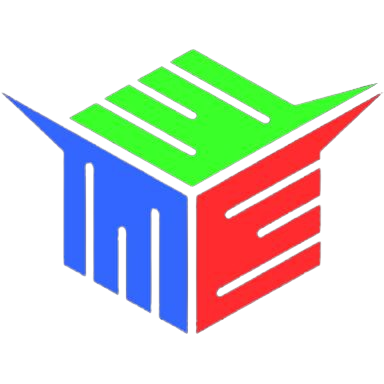

Máquinas do laboratório

ROUTER CNC LASER
- Dimensões de trabalho: 60cm x 40cm
- Laser de CO2 (gás carbônico). Potência: 80W
- 1 unidade
- Marca/Modelo: Visutec 6040
A ROUTER CNC LASER é uma máquina de corte e gravação a laser amplamente utilizada em diversos setores pela sua versatilidade e precisão. Seu design geralmente inclui uma estrutura robusta, com um mecanismo de movimento em dois eixos, que permite ao cabeçote laser se mover com alta precisão sobre a superfície do material. A máquina é equipada com uma fonte de laser, que pode variar em potência, dependendo do tipo de material a ser cortado ou gravado, e uma plataforma que suporta o material durante o processo.
O funcionamento da ROUTER CNC LASER baseia-se na tecnologia de controle numérico computadorizado (CNC), que possibilita a automação e a programação de cortes complexos. A máquina é controlada por um software que interpret a arquivos de design, geralmente em formatos vetorizados, como SVG ou DXF. Após carregar o projeto no software, o operador pode ajustar parâmetros como p otência do laser, velocidade de corte e profundidade de gravação. Uma vez configurada, a máquina executa o corte ou a gravação de forma precisa, movendo o cabeçote laser ao longo da superfície do material de acordo com as instruções programadas.
A ROUTER CNC LASER é capaz de cortar e gravar uma ampla variedade de materiais. Isso inclui, mas não se limita a, madeira, acrílico, plástico, papel, couro e alguns metais, como alumínio e aço inoxidável, quando equipados com lasers de alta potência. Essa versatilidade torna a máquina ideal para aplicações em design, prototipagem, marcenaria, moda e sinalização, permitindo a criação de peças personalizadas com detalhes intrincados e acabamentos de alta qualidade.

IMPRESSORA 3D
- Dimensões de trabalho: 10 x 10 x 10 cm
- Material de trabalho: PLA, ABS
- 4 unidades
- Marca/Modelo: Creality Ender 3
A impressora 3D Creality Ender 3 é uma das máquinas mais populares e acessíveis no mundo da impressão 3D, especialmente entre entusiastas e makers. Seu design compacto apresenta uma estrutura em alumínio que oferece estabilidade e robustez durante o processo de impressão. A Ender 3 é equipada com uma mesa de impressão aquecida, que ajuda na adesão do material e reduz a possibilidade de deformações nas peças impressas.
O funcionamento da Creality Ender 3 se baseia na tecnologia Fused Deposition Modeling (FDM), onde filamentos de plástico são derretidos e extrudidos através de um bico aquecido. A impressora é controlada por um sistema de microcontrolador que interpreta arquivos de impressão, geralmente em formato G-code, gerados a partir de softwares de fatiamento como Cura ou PrusaSlicer. Durante a impressão, a máquina deposita camadas sucessivas de material, permitindo a construção de objetos tridimensionais com alta precisão.
A Creality Ender 3 é capaz de imprimir uma variedade de materiais, sendo os mais comuns o PLA, ABS e PETG. O PLA é frequentemente utilizado por ser fácil de trabalhar e ter uma boa adesão à mesa, enquanto o ABS oferece maior resistência e durabilidade. Além disso, a impressora pode ser modificada e aprimorada com upgrades, como bicos de diferentes diâmetros e sistemas de resfriamento, o que a torna ainda mais versátil para diferentes tipos de projetos. A combinação de acessibilidade, qualidade e comunidade ativa de suporte fazem da Ender 3 uma escolha ideal para iniciantes e profissionais na impressão 3D.

MINI FRESADORA CARTESIANA
- Material de trabalho: madeira, plásticos e sintéticos leves.
- Dimensões de trabalho 30 x 18 cm
- 1 unidade
- Marca/Modelo: Projeto aberto/genérico CNC 3018
A mini fresadora CNC 3018 é uma máquina compacta e acessível, projetada para usuários que desejam explorar a fresagem CNC em projetos de pequeno porte. Com um chassis robusto em alumínio e estrutura metálica, a 3018 oferece estabilidade durante o processo de corte, tornando-a ideal para hobbyistas, makers e pequenas oficinas.
O funcionamento da CNC 3018 se baseia na tecnologia de controle numérico computadorizado (CNC), onde um computador envia comandos para a máquina, permitindo que ela realize cortes precisos em diversos materiais. A fresadora utiliza um spindle (ferramenta de corte) que pode ser trocado de acordo com o material a ser trabalhado. O software de controle, como GRBL, interpreta arquivos de design em formatos como G-code, que guiam a fresadora ao longo dos eixos X, Y e Z.
A mini fresadora CNC 3018 é capaz de trabalhar com uma variedade de materiais, incluindo madeira, acrílico, plásticos e metais macios, como alumínio. Sua versatilidade permite a realização de projetos variados, desde a fabricação de peças personalizadas até a gravação de designs em superfícies. Com um bom equilíbrio entre preço e desempenho, a CNC 3018 se tornou uma escolha popular para quem busca iniciar no mundo da fresagem CNC, permitindo uma ampla gama de aplicações criativas e industriais.
O que é o FabLab?
O FabLab CAMTUC é uma iniciativa dos cursos de Engenharia do Campus Tucuruí, Universidade Federal do Pará, com o objetivo de promover a fabricação digital no município de Tucuruí, aperfeiçoar o ensino, desenvolver a região e um dia se juntar à rede mundial.
O seu objetivo é fornecer às pessoas meios de liberar seu potencial criativo através da fabricação de soluções para os problemas do dia a dia. Artesanato, robótica, costura, artes plásticas, maquetes, automação, marcenaria, inteligência artificial, são alguns dos desafios que o laboratório pode encarar.As máquinas e ferramentas ali presentes permitem fabricar "quase qualquer coisa". No Lab tem impressoras 3D, cortadora de vinil, router laser, fresadoras, além de várias outras ferramentas elétricas e manuais para cortar, moldar, imprimir, soldar e transformar os mais variados tipos de materiais.
Logo do FabLab de Tucuruí